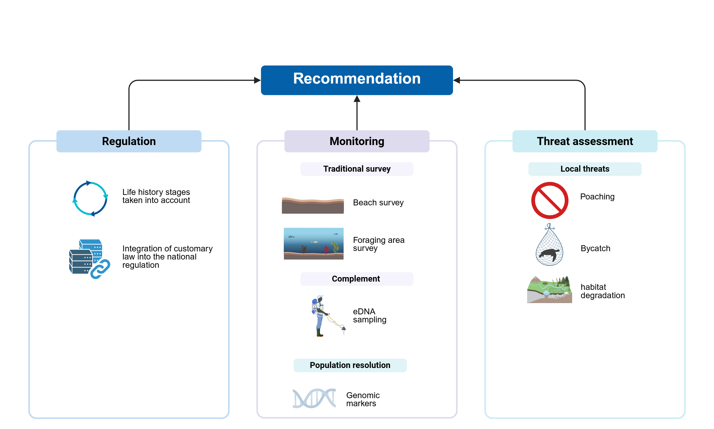
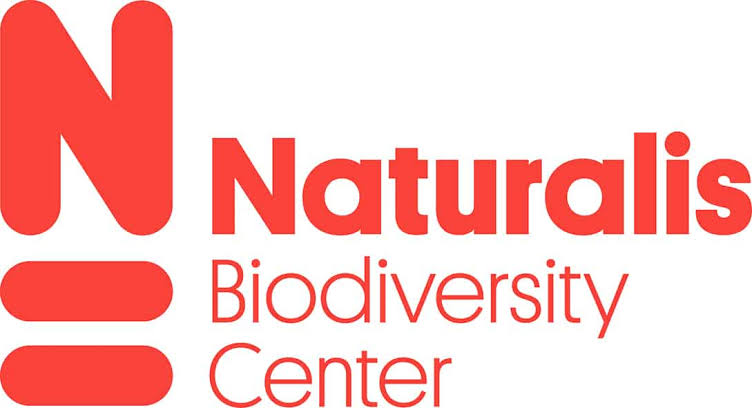
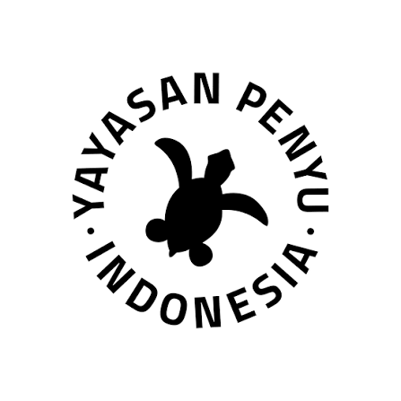
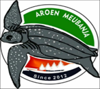
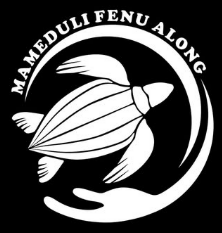
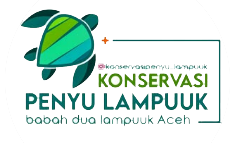
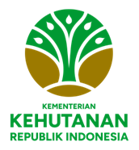
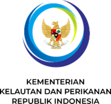
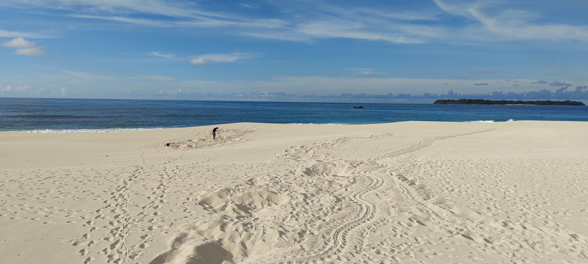
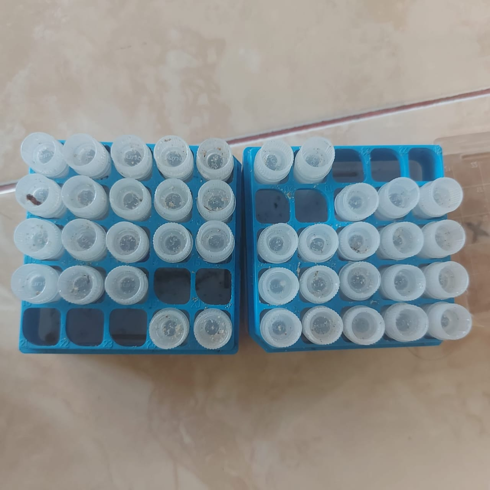

© Maslim As-Singkily
© Maslim As-Singkily
Overview
This research investigated the ecology, population structure, connectivity, and conservation context of leatherback turtles (Dermochelys coriacea) in Sumatra. The project combined long-term nesting data with molecular and environmental DNA approaches, together with an assessment of Indonesia's regulatory framework, to provide an integrated evidence base for leatherback turtle conservation. The research was conducted through the Marine Animal Ecology group at Wageningen University & Research and Naturalis Biodiversity Center, in collaboration with IPB University, Yayasan Penyu Indonesia–Turtle Foundation and local community conservation groups, including Aroen Meubanja, with support from the Ministry of Environment and Forestry (KLHK) and the Ministry of Marine Affairs and Fisheries (KKP).

Population trends and nesting ecology
Long-term monitoring data from Panga Beach, Sumatra, were used to examine nesting patterns and population trends over a 12-year period. The research identified seasonal variation in nesting activity and evaluated changes in nest numbers and nesting females through time, providing a baseline for future monitoring and population management.
Population genetics and connectivity
Mitochondrial DNA control-region sequences were used to investigate genetic diversity, population structure, and connectivity among leatherback nesting populations across the Indian Ocean and West Pacific. The results identified Sumatra as an important population within the regional network and provided evidence supporting its consideration as a distinct Management Unit for conservation planning.
eDNA-based population monitoring
The project developed and evaluated an environmental DNA approach for detecting leatherback turtles from seawater collected around nesting beaches. The study demonstrated the potential of eDNA sampling to complement conventional monitoring and genetic sampling, providing a non-invasive approach for population-level research.
Conservation policy and governance
The research also examined Indonesian national and regional regulations relevant to sea turtle conservation, including the role of customary governance in Aceh. Regulatory analysis was used to identify institutional involvement, areas of policy overlap, and opportunities to strengthen the alignment between scientific evidence and conservation implementation.
Conservation application
Together, these approaches provide an integrated framework for understanding leatherback population status, connectivity, and threats. The findings support evidence-based management and provide a foundation for strengthening regional conservation strategies for leatherback turtles across Indonesia and the wider Indo-Pacific.

Key publications
- Connectivity among leatherback turtle populations in the Indian Ocean and West Pacific: a new management unit proposed in Sumatra, Indonesia — Frontiers in Marine Science, 2025.
- Assessing applicability of eDNA-based sampling for population monitoring of leatherback turtles in the Northeast Indian Ocean — Environmental DNA, 2025.
- Sea turtle protection in Indonesia: a review of constitutional and customary regulations — Environmental Challenges, 2025.
- Leatherback turtles in Sumatra: integrating regulatory, genetic, and ecological data for conservation — PhD thesis, Wageningen University & Research, 2025.
Funding
Partners








Project photographs
© Maslim As-Singkily
 © Maslim As-Singkily
© Maslim As-Singkily
 © Maslim As-Singkily
© Maslim As-Singkily

© Maslim As-Singkily
© Maslim As-Singkily